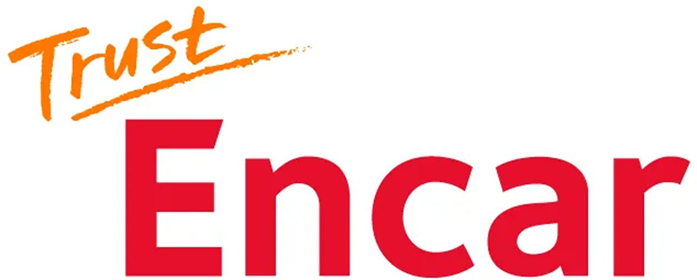
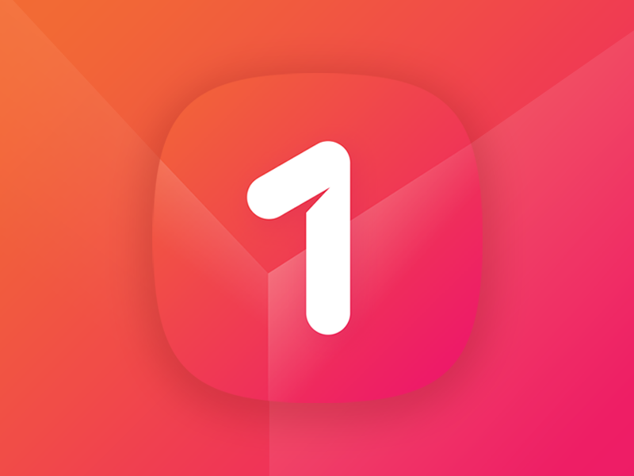
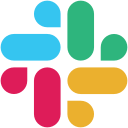
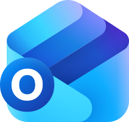
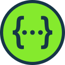
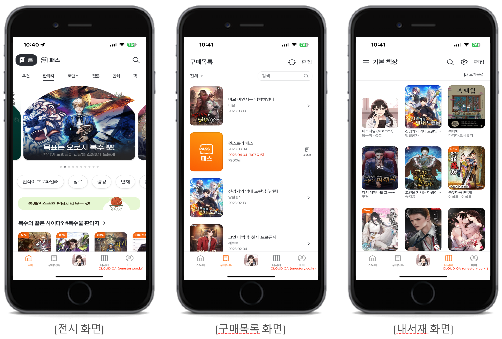
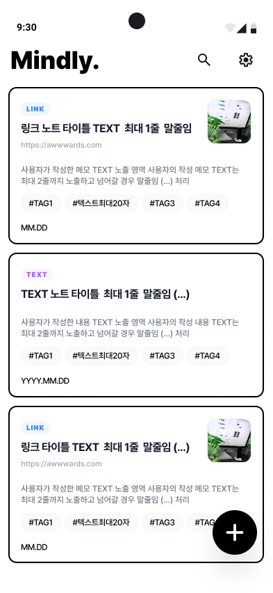
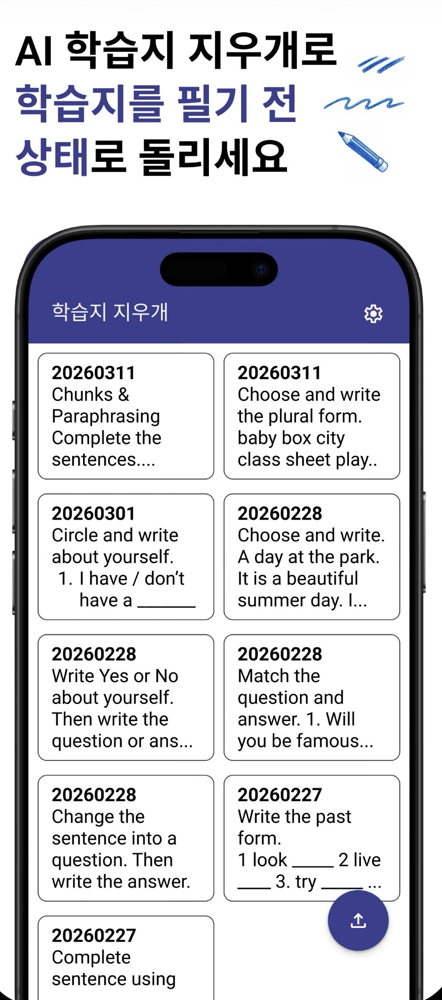
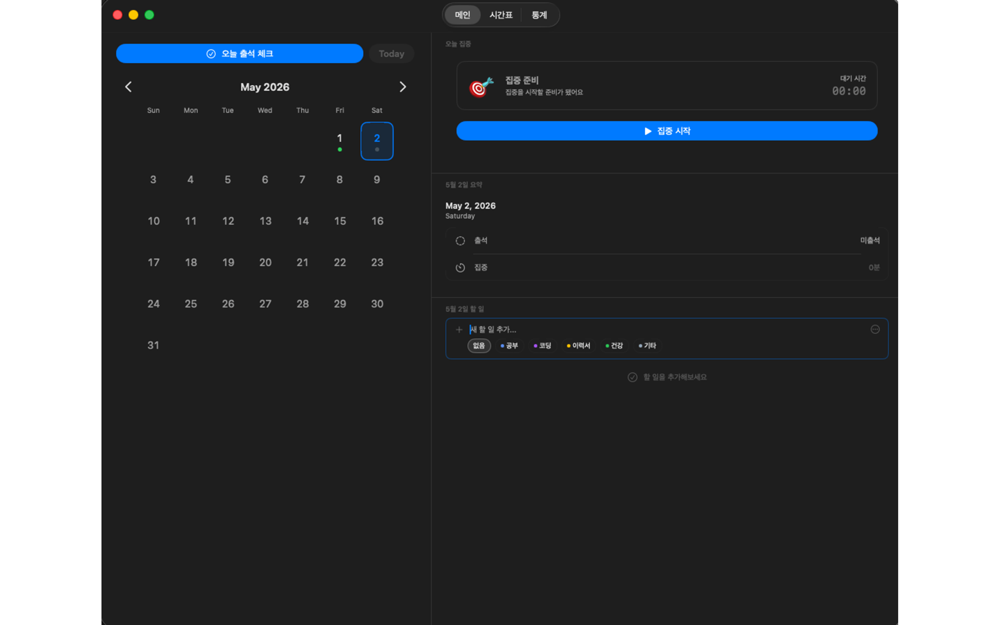

Cross-platform Perspective
Android에서 iOS까지
Android 개발자 시절부터 iOS를 스스로 학습했고, GS Retail 앱을 Android와 iOS로 병행 개발하며 실무 경험을 쌓았습니다. 이후 iOS 개발에 집중하기로 선택해 ONEstore에 iOS 개발자로 이직했습니다.
Self-directed Learning · Android/iOS Operation · iOS Career Transition10+ YEARS · SENIOR iOS APPLICATION DEVELOPER
Android와 iOS, SI 구축과 SM 운영, 고객사 프로젝트와 인하우스 서비스를 모두 경험했습니다. 다양한 직군과 제품의 전 과정을 함께하며 구현뿐 아니라 운영, 구조 개선, 협업 기준까지 다뤄왔습니다.

02 / ABOUT
저를 만든 네 가지 경험입니다.
여러 직군이 이해할 수 있는 언어로 기술적 제약과 대안을 설명하고, 구현 결과가 개인의 지식으로 남지 않도록 가독성 있는 코드와 문서, 공통 기준으로 정리하는 것을 중요하게 생각합니다.
레거시를 그대로 유지하거나 한 번에 교체하기보다 현재 동작을 분석해 SwiftUI 전환, 공통 처리 중앙화, 디자인 패턴 도입처럼 검증 가능한 개선으로 연결해왔습니다.
Cross-platform Perspective
Android 개발자 시절부터 iOS를 스스로 학습했고, GS Retail 앱을 Android와 iOS로 병행 개발하며 실무 경험을 쌓았습니다. 이후 iOS 개발에 집중하기로 선택해 ONEstore에 iOS 개발자로 이직했습니다.
Self-directed Learning · Android/iOS Operation · iOS Career TransitionCommunication & Documentation
기획자와 디자이너에게 기술적 제약과 대안을 이해하기 쉬운 표현으로 설명하고, 직군별 의견과 합의한 기준을 문서로 남깁니다. 이러한 협업 경험을 바탕으로 ONEstore Design System의 기술 파트 PM을 맡아 여러 직군의 기준을 조율하고 프로젝트를 배포 가능한 산출물로 연결했습니다.
Cross-functional Communication · Design System PM · DocumentationLegacy Modernization
UIKit 화면을 SwiftUI로 전환하고, WebView로 구성된 구매 목록을 UIKit Native 화면으로 교체했습니다. MVVM·MVI로 사용자 입력과 화면 상태의 흐름을 분리하고 Swift Testing 기반 테스트 코드를 작성하는 등 운영 중인 앱의 레거시를 실무에서 점진적으로 개선했습니다.
UIKit → SwiftUI · WebView → Native · MVVM / MVI · Swift TestingMultiple Domains & Environments
웹에이전시 SI, 고객사 시스템 SM, 인하우스 서비스를 거치며 B2B·B2C·사내 앱과 네이티브·하이브리드 앱을 개발했습니다. 커머스, 콘텐츠, 플랫폼, 모빌리티 도메인에서 구축부터 배포와 운영까지 경험했습니다.
SI · SM · In-house · Commerce · Content · Platform · Mobility03 / CAREER
Android 개발자로 시작해 iOS로 전환한 뒤, SI·SM·인하우스 환경에서 모바일 서비스를 구축하고 운영하며 구조 개선과 기술 범위 조율까지 담당했습니다.

MANAGEMENT
2025.06 — 2025.08 · 모바일팀 / 과장
담당 업무 운영 중인 엔카 iOS 앱의 UIKit·Objective-C 레거시를 분석하고, SwiftUI 기반 화면 전환과 테스트 가능한 상태 구조, 광고·운영 로깅 개선을 담당했습니다.
아키텍처와 디자인 패턴 없이 구성된 UIKit·Objective-C 화면에서 전환 범위를 정리했습니다. Leaf 화면인 제네시스 옵션 필터부터 SwiftUI로 재구성하고 MVVM·MVI 두 가지 상태 흐름을 적용했으며, Swift Testing으로 테스트 코드까지 작성했습니다.
화면과 모듈마다 파편화되어 있던 Crashlytics 및 API 요청·응답 로깅 코드를 공통 흐름으로 중앙화했습니다. 중복된 레거시 코드를 정리하고 오류 추적 기준과 운영 관리 지점을 통일해 장애 발생 시 확인해야 할 흐름을 명확하게 만들었습니다.
Font, Color, Radius를 토큰화하고 Semantic Color Naming으로 중복 Resource를 정리했습니다. 토큰과 공통 컴포넌트를 코드·모듈로 구현해 신규 SwiftUI 화면에 적용하고 실제 배포 버전에 반영했습니다.

PLATFORM & CONTENT
2021.09 — 2025.06 · 스토리 앱 개발팀 / iOS Platform팀 · iOS Developer
담당 업무 ONEstory 콘텐츠 서비스 운영에서 시작해 Apple DMA 대응 글로벌 앱 마켓과 전사 디자인 시스템으로 업무를 확장했습니다. iOS 구현 가능성 검토, 아키텍처 설계, 개발 범위 조율과 디자인·개발 협업 기준 수립을 담당했습니다.
Apple DMA 정책에 따른 제3자 앱 마켓의 국내 구현 가능성을 검토했습니다. iOS 개발 범위 조율 역할로 MarketplaceKit, 앱 아키텍처, 네트워크 모듈과 JavaScript Interface를 설계하고 Prototype에서 Alpha·Beta로 이어지는 구현 범위와 리스크를 정리했습니다. Apple Cork에서 약 2주간 기술 세션에 참여해 정책과 제약을 직접 확인했습니다.
기술 파트 PM으로 공통 UI 컴포넌트, 디자인 토큰, Style Dictionary와 Figma Code Connect 기반의 협업 구조를 설계했습니다. Android·iOS·Web·디자인·기획의 기준을 조율하고 컴포넌트 문서와 레이어·토큰 기준표를 정리했으며, C레벨 보고와 전사 세미나를 포함해 총 3회의 도입 세션을 진행했습니다.
e-book 콘텐츠 앱의 정기 배포, VOC와 OS 업데이트 대응, 주요 화면 개선을 담당했습니다. WebView 화면을 UIKit Native로 전환하고 내서재·마이페이지·고객문의, 소셜 로그인, 위젯과 iPad UI를 개발하며 인하우스 콘텐츠 서비스의 운영 흐름을 경험했습니다.
MOBILE OPERATION
2017.06 — 2021.09 · e-Commerce팀 / 대리 · Android & iOS Developer
담당 업무 GS Retail 전사 모바일 앱 10종 이상을 Android와 iOS로 운영하고, 정기·긴급 배포와 OS·Deprecated API·VOC·Crash 대응을 수행했습니다. GS 계열사 SI 프로젝트와 외부 투입 개발자 인수인계·인스펙션도 담당했습니다.
GS Fresh, GS 수퍼마켓, 달리살다, 나만의 냉장고, 배송기사 전용 앱 등 10종 이상의 앱을 운영했습니다. 각 사업부 현업자와 기능 범위와 배포 일정을 조율하고, 대규모 B2C 커머스와 실시간 QR 결제 서비스의 장애·VOC·SDK 이슈를 대응하며 운영 기준을 축적했습니다.
Android와 iOS를 모두 이해한 경험을 바탕으로 모바일 파트 PL 역할을 맡았습니다. 양 플랫폼의 사용자 시나리오와 기술 스펙, SSO·WKWebView·API·외부 SDK 연동 범위를 맞추고 구현 문서와 협업 커뮤니케이션의 중심 역할을 수행했습니다.
GS 계열사의 신규 모바일 서비스 구축을 담당하는 SI팀에서 Android 앱 개발을 수행했습니다. 기획서와 디자인 시안을 모바일 기능으로 구체화하고 API, WebView, 인증과 외부 SDK 연동 범위를 협업 부서와 조율하며 구축부터 검수와 이관까지 진행했습니다.
EARLY CAREER · SI / SM
2014.12 — 2017.05 · 모바일팀 / 사원 · Android Developer
담당 업무 웹에이전시 모바일팀에서 B2B·B2C·사내 인트라넷, Native·Hybrid 앱을 개발했습니다. 제안과 요구사항 정리부터 디자인·서버 협업, 외부 SDK 연동, 출시와 운영까지 여러 SI/SM 프로젝트의 전 과정을 경험했습니다.
CafeUnion, LuxeWater 등 중국 시장 대상 앱을 개발했습니다. 위치 기반 매장 탐색, 소셜 로그인과 결제, WebView·JavaScript Interface, 중국 현지 SDK를 연동하고 기획·디자인·서버 개발자와 플랫폼별 예외 조건을 조율했습니다.
MyD2의 메인 Android 개발자로 기존 웹 인트라넷을 모바일 앱으로 구현했습니다. 회의실 예약, 휴가 결재, 사내 커뮤니케이션 기능과 API·푸시 연동을 담당하고 출시 이후 운영까지 이어갔습니다.
올가홀푸드, 폴리스쿨, SK FashionMall Brochure 등 Native·Hybrid 앱과 iPad 전용 앱을 개발했습니다. 상품 탐색, 바코드·QR, 푸시, 콘텐츠 노출과 외부 SDK를 서비스 성격에 맞게 연동했습니다.
할리스커피 등 출시된 브랜드 앱의 기능 개선, OS 및 SDK 변경 대응, 오류 확인과 배포 업무를 수행하며 SI 구축 경험을 운영·유지보수 영역으로 확장했습니다.
04 / TECH SKILLS
카드의 숫자는 현재 포트폴리오에서 해당 기술을 실제로 사용한 프로젝트 수입니다. 기술을 선택하면 적용 프로젝트와 사용 맥락을 확인할 수 있습니다.
협업과 업무 과정에서 사용했지만 핵심 역량 카드보다 간결하게 보여주는 도구입니다.

Slack
Outlook
Swagger05 / PROJECTS
회사 프로젝트와 개인 프로젝트를 함께 정리했습니다. 각 프로젝트에서 맡은 역할, 해결한 문제, 선택한 기술적 결정을 확인할 수 있습니다.

Apple DMA 정책에 따른 제3자 앱 마켓의 iOS 구현 가능성과 기술 리스크를 단계별로 검증했습니다.

 +4
+4
공통 컴포넌트와 디자인 토큰을 기반으로 디자인-개발 협업 구조와 배포 흐름을 구축했습니다.
+2

e-book 콘텐츠 앱을 운영하며 WebView 화면의 Native 전환, 위젯과 iPad UI를 개발했습니다.
+4

UIKit·Objective-C 레거시 화면을 SwiftUI와 테스트 가능한 상태 구조로 점진적으로 전환했습니다.
 +7
+7

GS Retail 전사 앱 운영과 GS Fresh 차세대 구축에서 안정성 대응과 모바일 범위 조율을 담당했습니다.
+5
중국 시장 O2O 커머스 앱에서 위치 기반 기능과 현지 로그인·결제 SDK를 연동했습니다.
 +7
+7
중국 브랜드 하이브리드 앱의 WebView 인터페이스와 현지 외부 SDK 연동을 구현했습니다.
+4
식품 커머스 앱에서 상품 탐색, 바코드·QR과 푸시 기능을 구현했습니다.
+7
기존 웹 인트라넷을 회의실 예약과 휴가 결재가 가능한 Android 앱으로 구축하고 운영했습니다.

메모·링크 저장과 AI 검색 흐름을 설계하고 Codex 기반 하네스와 검증 절차로 구현했습니다.
+1

VisionKit과 OpenAI API를 연결해 학습지 판별, 정리와 실패 케이스 방어 흐름을 구현했습니다.
+1

집중 기록과 일정 관리를 결합한 macOS 제품을 기획·설계하고 App Store에 출시했습니다.
+1
06 / AI WORKFLOW
요구사항을 사용자 시나리오로 설명하고, 구현 계획을 먼저 검토한 뒤 승인한 단계만 진행합니다. 화면은 와이어프레임으로 구체화하고, 하네스와 검증 절차로 AI의 작업 범위를 통제합니다.
AI에게 구현 결정을 넘기지 않습니다. 사용자의 흐름과 개발 기준은 직접 정의하고, AI는 승인된 계획과 검증 가능한 범위 안에서 작업하도록 운영합니다.
바로 “구현해”라고 요청하지 않습니다. 해결하려는 문제, 사용자의 진입 경로, 입력과 상태 변화, 성공·실패 조건을 기획서 수준으로 정리해 AI가 기능의 목적과 전체 흐름을 먼저 이해하도록 합니다.
“사용자가 목록에서 항목을 선택하고 편집을 완료하거나 취소하기까지의 화면 상태와 예외 흐름을 먼저 정리해줘. 아직 코드는 수정하지 마.”
AI가 기존 구조, 영향 파일, 의존성, 위험 요소와 구현 순서를 먼저 조사하도록 합니다. Feature Planner와 iOS Architecture Agent 등 역할별 Agent·Skill을 사용해 분석과 구현을 분리하고, 계획이 현재 구조에 맞는지 직접 판단합니다.
“관련 코드를 분석하고 변경 대상, 유지할 구조, 단계별 구현 순서, 예상 리스크를 보고해줘. 승인 전에는 파일을 수정하지 마.”
AI의 계획을 그대로 채택하지 않고 구현 범위와 트레이드오프를 조정합니다. 이후 Domain, ViewModel, UI, 테스트처럼 단계를 나누고, 각 단계의 결과를 확인한 뒤 다음 작업을 승인해 AI가 임의로 범위를 확장하지 못하게 합니다.
“1단계 Domain 변경만 승인해. UI와 저장소는 수정하지 말고, 완료 후 변경 파일과 판단 근거를 먼저 보고해줘.”
레이아웃, 정보 우선순위, 상태별 차이를 프롬프트만으로 설명하기 어려울 때 직접 와이어프레임을 제작합니다. AI가 화면 구조를 추측하지 않고 시각적 기준과 기존 디자인 시스템 안에서 구현하도록 합니다.
“첨부한 와이어프레임의 정보 순서와 상태별 UI를 유지해. 기존 컴포넌트를 먼저 확인하고, 새 스타일을 만들기 전에 재사용 가능성을 보고해줘.”
AGENTS.md에는 지속적으로 지켜야 할 아키텍처·보안·수정 규칙만 두고, Agent·Skill·테스트·빌드 명령을 연결합니다. AI의 완료 보고가 아니라 diff, Xcode 빌드·테스트, Preview·Simulator와 수동 QA 결과로 완료를 판단합니다.
규칙 로드 → 허용 범위 확인 → 최소 변경 → diff 검토 → build/test → 화면·로그 확인을 반복 가능한 검증 루프로 구성합니다.
07 / CONTACT
AVAILABLE FOR CONVERSATION
운영 중인 앱의 구조 개선, SwiftUI 전환, 디자인 시스템과 플랫폼화 경험이 필요한 팀이라면 편하게 연락해 주세요.
VISUAL EVIDENCE
이미지를 클릭해 프로젝트의 구조와 구현 결과를 확인할 수 있습니다. ESC · ← →